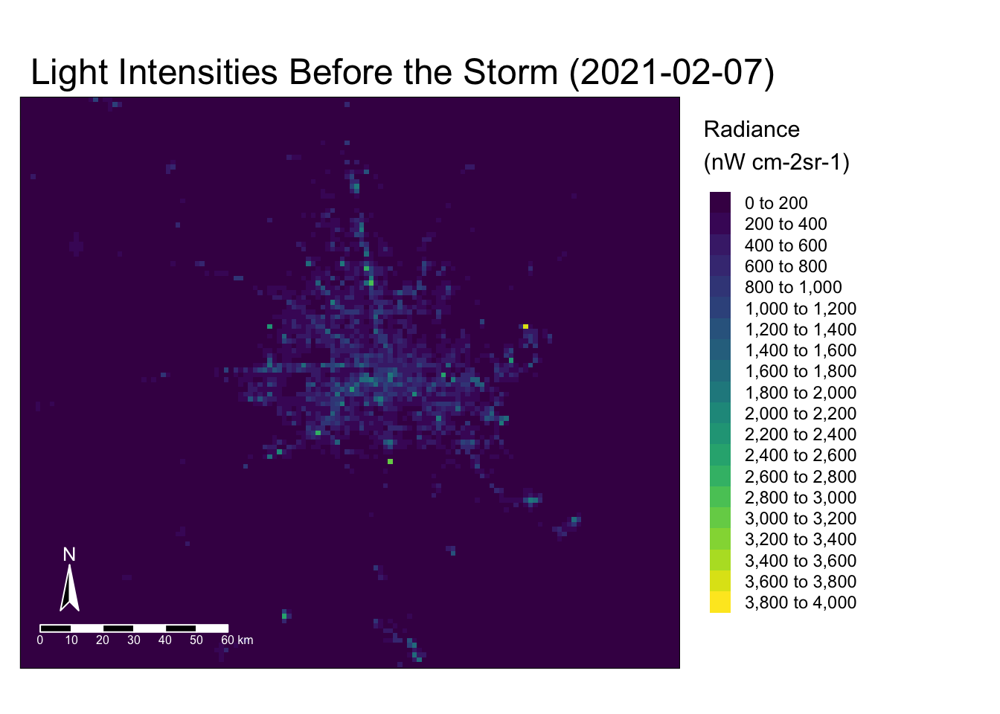
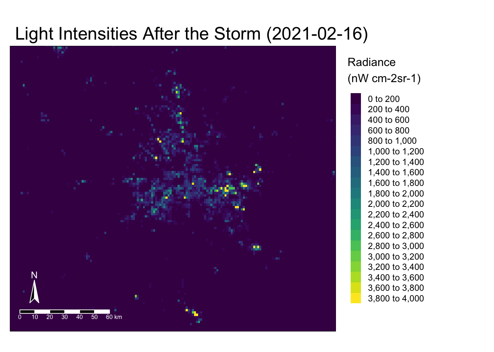
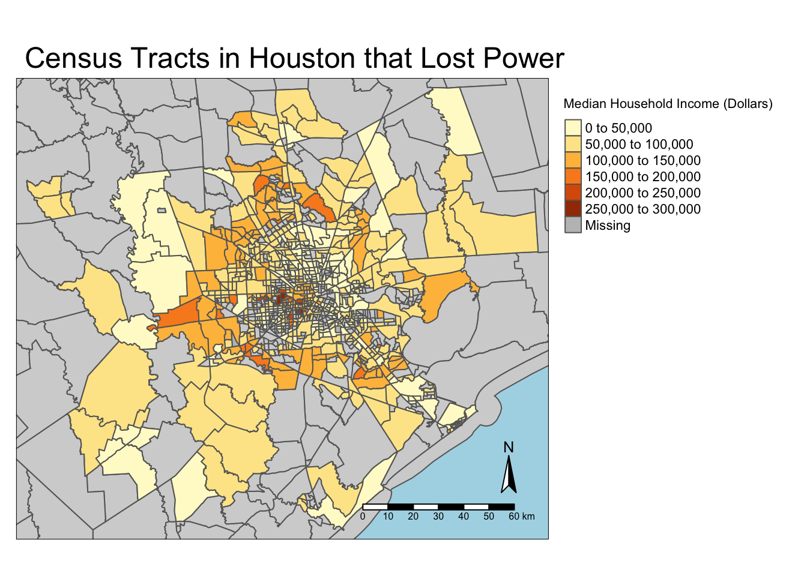
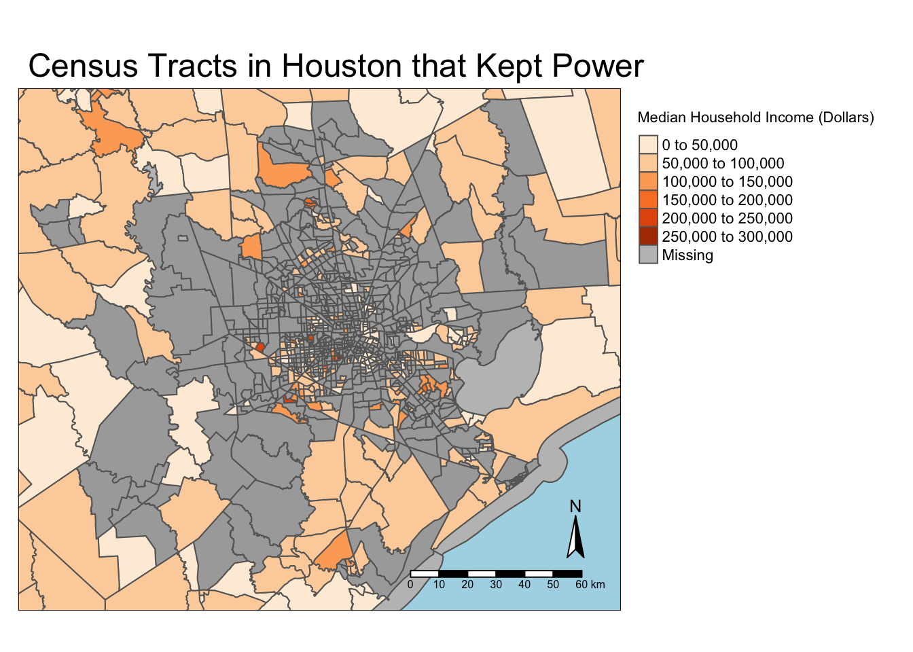
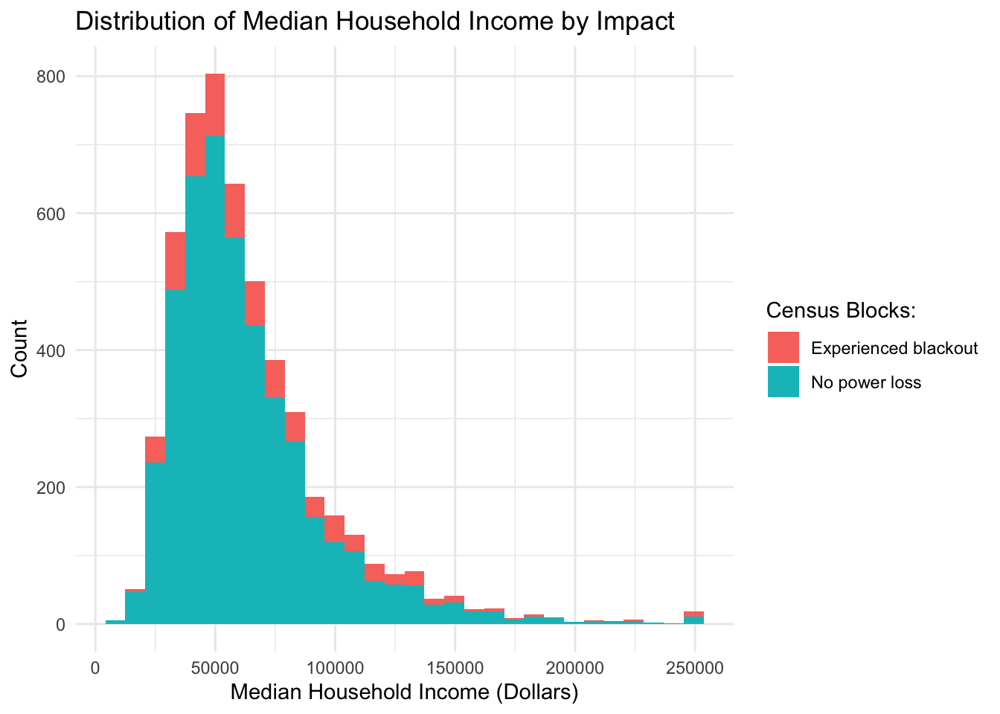

Expand code
library(here)
library(tidyverse)
library(sf)
library(tmap)
library(dplyr)
library(kableExtra)
library(terra)
library(patchwork)
library(tmaptools)In February of 2021, Texas experienced a series of extreme winter storms1 that exposed vulnerabilities in the power grid2. The resulting power outages disproportionately affected different socioeconomic groups in Houston, Texas. Using 4 different datasets (VIIRS, roads, houses, and socioeconomic data), this analysis investigates the impacts of these power outages on the residents of the Houston metropolitan area.
All the data used in this analysis was downloaded from a pre-prepared Google Drive. The data in the drive was accessed from the following sources:
VIIRS Data:
The Visible Infrared Imaging Radiometer Suite (VIIRS)3 data is remotely-sensed night lights data acquired from the Suomi satellite. It includes 4 files: two tiles (h08v05 and h08v06) per date (2021-02-07 and 2021-02-16). Those dates were chosen due to the least amount of cloud cover, allowing for the best contrast in night lights at the time of the power crisis.
Roads and Houses Data:
Geofabrik’s download site is a third party distributor for OpenStreetMap (OSM) data. Here, we can find highways and houses data for Texas (downloaded as .gpkg files).
Socioeconomic Data:
The U.S. Census Bureau’s American Community Survey data is census-tract level data from 2019 (downloaded as a .gbd file).
library(here)
library(tidyverse)
library(sf)
library(tmap)
library(dplyr)
library(kableExtra)
library(terra)
library(patchwork)
library(tmaptools)# Read in VIIRS data
before_storm_5 <- stars::read_stars(here::here("data", "VNP46A1", "VNP46A1.A2021038.h08v05.001.2021039064328.tif"))
before_storm_6 <- stars::read_stars(here::here("data", "VNP46A1", "VNP46A1.A2021038.h08v06.001.2021039064329.tif"))
after_storm_5 <- stars::read_stars(here::here("data", "VNP46A1", "VNP46A1.A2021047.h08v05.001.2021048091106.tif"))
after_storm_6 <- stars::read_stars(here::here("data", "VNP46A1", "VNP46A1.A2021047.h08v06.001.2021048091105.tif"))
# Convert to raster objects
before_storm_5 <- rast(before_storm_5)
before_storm_6 <- rast(before_storm_6)
after_storm_5 <- rast(after_storm_5)
after_storm_6 <- rast(after_storm_6)
# Find difference between before and after storm per tile
diff_5 <- before_storm_5 - after_storm_5
diff_6 <- before_storm_6 - after_storm_6
# Merge tiles to one raster
diff <- merge(diff_5, diff_6)# Reclassify the raster
rcl<- matrix(c(-Inf, 200, 0, # min, max, group
200, Inf, 1),
ncol = 3, byrow = TRUE)
diff_rcl <- terra::classify(diff, rcl = rcl)
# Assign 'blackout' to changes greater than 200 nW cm-2sr-1 (1)
levels(diff_rcl) <- tibble::tibble(id = 0:1,
cats = c("normal",
"blackout"))
# Create a mask of the blackout (the NA values) for each tile
blackout_mask <- diff_rcl
# Assign NA to "normal" locations
blackout_mask[blackout_mask == 0] <- NA
mask <- diff_rcl[blackout_mask, drop = FALSE]# Create smaller raster of Houston
clip <- rast(xmin = -96.5,
xmax = -94.5,
ymin = 29,
ymax = 30.5,
resolution = 0.3,
vals = 1)
# Clip the mask to smaller raster
mask_clip <- mask[clip, drop = FALSE]
# Vectorize the mask
mask_polygons <- as.polygons(mask_clip)
mask_vec <- st_as_sf(mask_polygons)
# Re-project the cropped blackout mask to EPSG:3083
mask_vec <- st_transform(mask_vec, crs("EPSG:3083"))# Read in road data (highways only)
highways <- st_read(here::here("data", "gis_osm_roads_free_1.gpkg"), query = "SELECT * FROM gis_osm_roads_free_1 WHERE fclass='motorway'", quiet = TRUE)
# See if CRS match
if (st_crs(highways) == st_crs(mask_vec)) {
print("The CRS match! Good to go.")
} else {
warning("The CRS don't match! Don't forget to transform.")
highways <- st_transform(highways, crs= st_crs(mask_vec))
}
# Create a 200 m buffer for highways
highway_buffer <- st_buffer(highways, dist = 200)
highway_union <- st_union(highway_buffer)
# Exclude 200 m from highways from mask
exclude_hwy <- st_difference(mask_vec, highway_union) #highway mask# Read in building data
buildings <- st_read(here::here("data", "gis_osm_buildings_a_free_1.gpkg"),
query = "SELECT *
FROM gis_osm_buildings_a_free_1
WHERE (type IS NULL AND name IS NULL)
OR type in ('residential', 'apartments', 'house', 'static_caravan', 'detached')",
quiet = TRUE)
# Transform the CRS to match (if is doesn't already match)
if (st_crs(exclude_hwy) == st_crs(buildings)) {
print("The CRS match! Good to go.")
} else {
warning("The CRS don't match! Don't forget to transform.")
buildings <- st_transform(buildings, st_crs(exclude_hwy))
}
# Identify buildings that were impacted using the mask
buildings_impacted <- buildings[exclude_hwy,]# Isolate before-and-after storm rasters
before <- merge(before_storm_5, before_storm_6)
after <- merge(after_storm_5, after_storm_6)
# Transform the CRS to match (if it doesn't already)
if (st_crs(before) == st_crs(exclude_hwy)) {
print("The CRS match! Good to go.")
} else {
warning("The CRS don't match! Don't forget to transform.")
before <- project(before, crs("EPSG:3083"))
}
# Map Radiance before the storm
before_map <- tm_shape(before, bbox = census_impacted) +
tm_raster(breaks = seq(0, 4000, by = 200),
palette = "viridis",
title = "Radiance \n(nW cm-2sr-1)") +
tm_layout(main.title = "Light Intensities Before the Storm (2021-02-07)",
legend.outside = TRUE,
legend.text.size = 2,
legend.title.size = 3)+
tm_compass(text.color = "white",
position = c("left", "bottom"),
color.light = "black",
color.dark = "white") +
tm_scale_bar(text.color = "white",
color.dark = "white",
color.light = "black",
position = c("left", "bottom"))
before_map
# Map Radiance after the storm
after_map <- tm_shape(after, bbox = census_impacted) +
tm_raster(breaks = seq(0, 4000, by = 200),
palette = "viridis",
title = "Radiance \n(nW cm-2sr-1)") +
tm_layout(main.title = "Light Intensities After the Storm (2021-02-16)",
legend.outside = TRUE,
legend.text.size = 2,
legend.title.size = 3) +
tm_compass(text.color = "white",
position = c("left", "bottom"),
color.light = "black",
color.dark = "white") +
tm_scale_bar(text.color = "white",
color.dark = "white",
color.light = "black",
position = c("left", "bottom"))
after_map
#tmap_arrange(before_map, after_map, col= 2, nrow =1)# Map homes that lost power
tm_shape(merged, bbox = buildings_impacted) +
tm_polygons() +
tm_shape(buildings_impacted) +
tm_polygons(border.col = "firebrick") +
tm_layout(main.title = "Homes in Houston that Lost Power",
bg.color = "lightblue",
legend.outside = TRUE) +
tm_add_legend(type = "symbol", col = "firebrick", title = "Homes without power", size = 1/2) +
tm_compass(position = c("right", "bottom")) +
tm_scale_bar(position = c("right", "bottom"))
# Estimate number of homes that lost power (by type)
buildings_impacted %>%
select(type) %>%
group_by(type) %>%
summarize(count = n()) %>%
st_drop_geometry() %>%
kbl() %>%
kable_styling()| type | count |
|---|---|
| apartments | 1120 |
| detached | 353 |
| house | 19760 |
| residential | 1395 |
| static_caravan | 80 |
| NA | 134703 |
# Estiamte total number of homes that lost power
print(paste0("It is estimated that ", nrow(buildings_impacted), " homes lost power in Houston as a result of the storm."))[1] "It is estimated that 157411 homes lost power in Houston as a result of the storm."# Map cansus blocks that lost power
tm_shape(merged, bbox = census_impacted) +
tm_polygons(col = "lightgray") +
tm_shape(census_impacted) +
tm_polygons(col = "B19013e1", title = "Median Household Income (Dollars)") +
tm_layout(main.title = "Census Tracts in Houston that Lost Power",
bg.color = "lightblue",
legend.outside = TRUE)+
tm_compass(position = c("right", "bottom")) +
tm_scale_bar(position = c("right", "bottom"))
# Find the census blocks in the Houston clip that were not impacted
census_not_impacted <- merged[!(merged$GEOID %in% census_impacted$GEOID),]
census_not_impacted_clip <- census_not_impacted[mask_vec,]
# Make sure CRS match
if(nrow(merged) == (nrow(census_impacted) + nrow(census_not_impacted))){
print("Good to go!")
} else {
warning("The number of rows don't add up.")
}
# Map census blocks that were not impacted
tm_shape(merged, bbox = census_impacted) +
tm_polygons(col = "gray90") +
tm_shape(census_impacted) +
tm_polygons(col ="darkgray") +
tm_shape(census_not_impacted) +
tm_polygons(col = "B19013e1", title = "Median Household Income (Dollars)", palette = "Oranges") +
tm_layout(main.title = "Census Tracts in Houston that Kept Power",
bg.color = "lightblue",
legend.outside = TRUE) +
tm_compass(position = c("right", "bottom")) +
tm_scale_bar(position = c("right", "bottom"))
# Add column to each df to describe impact
census_impacted <- census_impacted %>%
mutate(impact = "Experienced blackout")
census_not_impacted <- census_not_impacted %>%
mutate(impact = "No power loss")
# Create a histogram of values by impact
rbind(census_impacted, census_not_impacted) %>%
st_drop_geometry() %>%
ggplot(aes(x= .$B19013e1, fill = .$impact)) +
geom_histogram() +
labs(x = "Median Household Income (Dollars)", y = "Count", title="Distribution of Median Household Income by Impact") +
scale_fill_discrete(name = "Census Blocks:") +
theme_minimal()
Through this analysis, I found that the disparity between census blocks that lost power and didn’t lose power was greatest in the lower median income groups. As income rose, the disparity became less, as evident in my histogram.
Some limitations of this study include the satellite imagery; the images had to be taken from specific days with the lowest cloud cover. There could have been some power restored in those first few days that was not accounted for as a part of the initial loss, and lingering clouds could have still impacted the difference calculated by the contrasting rasters. The data are also right-skewed, with more data concentrated in lower median income brackets. There were still some higher median income census blocks that experienced blackouts, but higher median income census blocks were less common in general. It would be interesting to look at a temporal analysis of this data to see how quickly power was restored in certain census blocks vs. others.